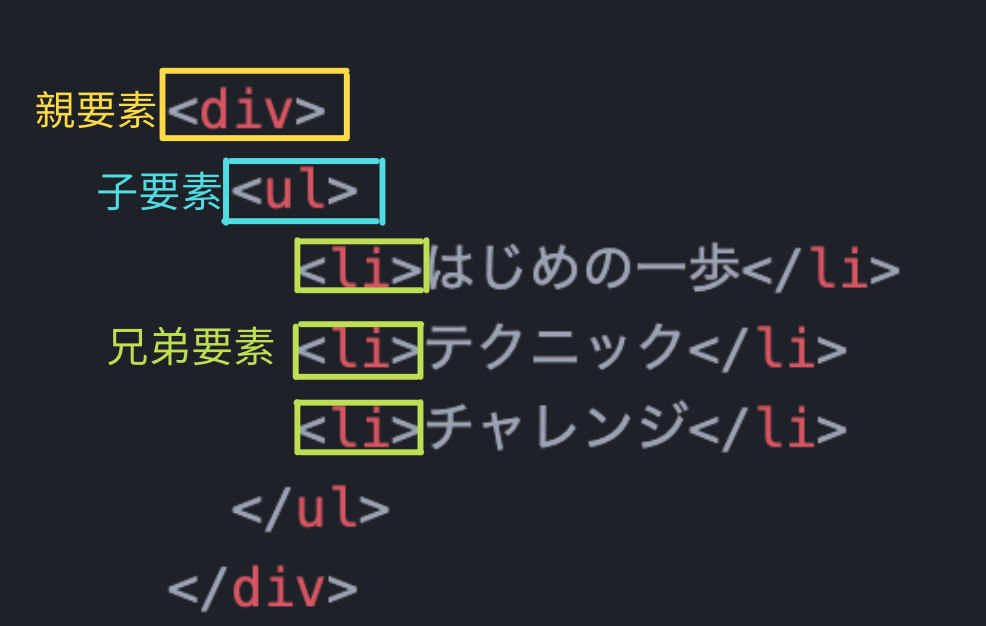
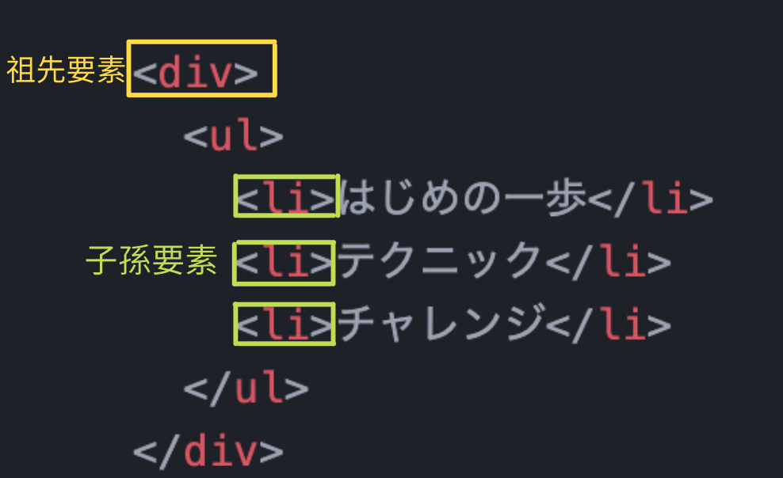

さて、基本的な構造がわかってきたところで、HTMLの家族構成を見ていきましょう！
「ん？」となってますね？実はHTMLの要素は家族関係に例えるととても理解しやすいんです。こちらの画像をご覧ください↓
なんとなく理解できそうですか？
ある要素から見て、すぐ上の、頭１つ出た要素を親要素、
逆にある要素から見てすぐ下の要素を子要素と呼びます！この親子関係はCSSでも利用することが今後何度もあると思うので、
ぜひ意識してコーディングしていきましょう！
ちなみに、緑色の縁がついた部分、頭の位置が揃っていますよね。この子たちは兄弟要素と呼ばれています。 例えば上の図でいうと、「はじめの一歩」の兄弟は「テクニック」と「チャレンジ」です。「テクニック」にとって「はじめの一歩」は兄要素、「チャレンジ」は弟要素になります。 また、「はじめの一歩」と「テクニック」のようにすぐ隣にいる兄弟たちのことを隣接要素と呼ぶこともあります。 CSSで利用できるとはいえ、頻出ではないのでさらっと流しておきましょう^^
ではこの兄弟たちと親はどういう関係なのでしょう？こちらの画像をご覧ください↓
兄弟要素から見て「親要素の親要素」は祖先要素、 また、祖先要素にとって「子要素の子要素」は子孫要素といいます。 これは何世代続いていても、つまりおじいちゃんもひいおじいちゃんもみんな祖先要素と呼ばれるし、孫もひ孫もみんな子孫要素と呼ばれます。
これでだいぶHTMLを書く準備ができてきましたね！
最後に空要素と呼ばれる終了タグのない、つまりサンドウィッチにしなくて良い要素をいくつか紹介して今回は終わります！
<img>：画像を挿入する
<br>：改行する
<link>：関連するファイルにリンクする
<input>：テキストボックスなどフォーム部品を追加する
ここだけの話、中の人は説明を文字にするのがとても苦手なので、わかりにくいと感じることも多々あると思います。
そんな時は気軽に質問など送ってくださいね！一緒に頑張りましょう！Creator's Roomでお待ちしてます！